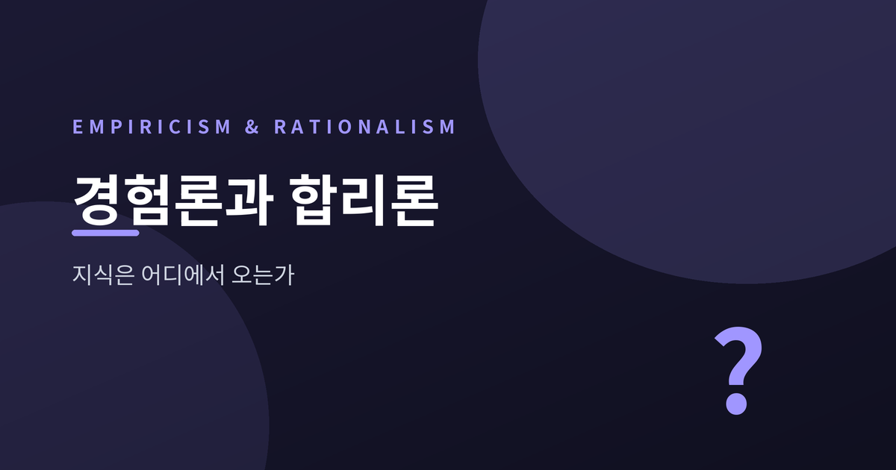
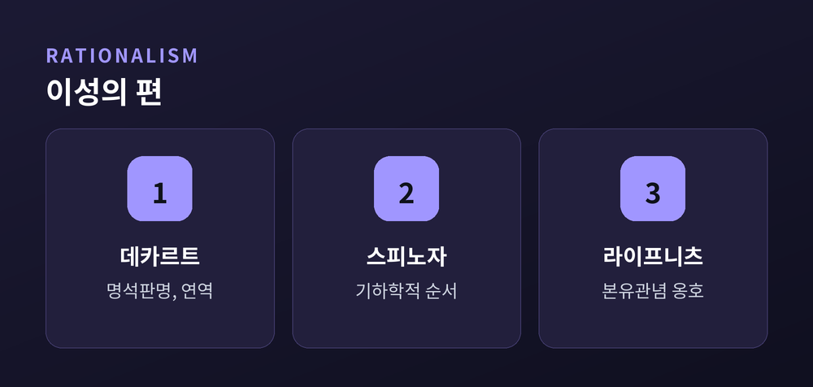
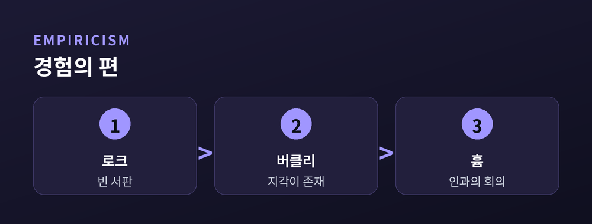
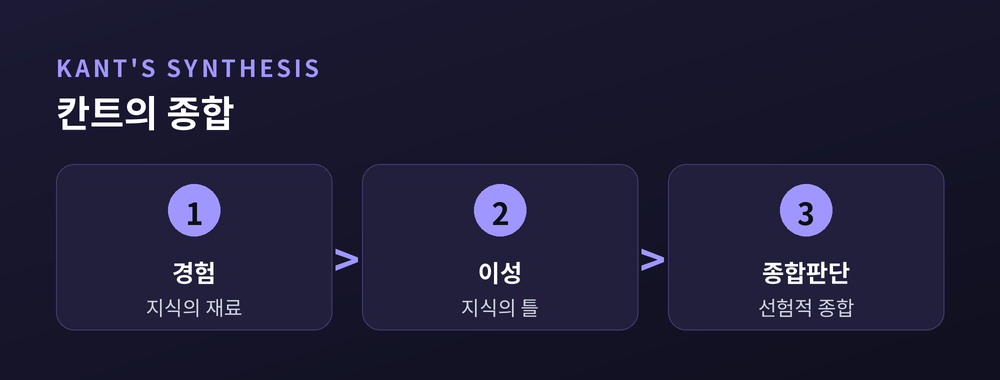

지식은 어디에서 오는가

이번 글에서는 근대 철학의 오랜 물음 하나를 정리해 보겠습니다.
우리가 무언가를 안다고 할 때, 그 앎은 어디에서 오는 걸까요.
감각으로 겪은 경험일까요, 아니면 타고난 이성일까요.
합리론은 이성을 지식의 첫 번째 뿌리로 봅니다.
데카르트는 감각을 믿지 않았습니다. 감각은 늘 변하고 속이기 때문입니다.
그는 의심할 수 없는 확실한 관념에서 출발해, 수학처럼 하나씩 연역해 나갔습니다.
스피노자는 『에티카』를 기하학의 공리와 정리처럼 썼습니다.
라이프니츠는 수학의 필연성만은 경험으로 설명되지 않는다고 보았습니다.
이들에게 마음은 백지가 아닙니다.
신, 논리, 도덕의 씨앗이 이미 심겨 있다고 보았습니다. 이것이 본유관념입니다.

로크는 정반대에서 시작합니다.
태어난 마음은 아무것도 쓰이지 않은 백지, 곧 빈 서판이라는 것입니다.
모든 관념은 감각과 반성이라는 경험을 통해 나중에 새겨집니다.
그는 물었습니다. 본유관념이 정말 있다면, 왜 아이도 배우지 못한 사람도 그것을 모르는가.
정말 타고난 것이라면 누구에게나 보편적으로 알려져 있어야 한다는 논리였습니다.
버클리는 여기서 한 걸음 더 나아가, 지각되지 않는 물질은 없다고까지 밀어붙였습니다.
경험론은 흄에 이르러 끝까지 밀립니다.
흄은 인과조차 의심했습니다. 우리가 원인과 결과라 부르는 것은, 반복을 본 습관일 뿐이라고요.
확실해 보이던 세계가, 경험을 파고들수록 오히려 흔들렸습니다.

쟁점은 하나로 모입니다. 앎의 원천은 이성인가, 경험인가.
로크는 마음을 백지라 불렀습니다.
라이프니츠는 그 말에 대리석을 내밀었습니다.
백지가 아니라, 결이 있는 대리석이라는 것입니다. 그 결이 어떤 조각상이 새겨질지를 미리 정한다는 뜻입니다.
예전에는 둘 중 하나가 옳아야 한다고 여겼습니다.
지금은 그 물음 자체가 너무 좁았음을 압니다.
칸트는 두 흐름을 한자리에 앉혔습니다.
그의 정리는 이렇습니다. 지식의 재료는 경험이 주고, 그 틀은 이성이 준다.
사실 칸트를 깨운 사람은 흄이었습니다. 인과가 습관일 뿐이라는 회의가 그를 흔들었기 때문입니다.
칸트는 그 인과를 다시 세우되, 세계가 아니라 우리 안의 틀에서 찾았습니다.
시간, 공간, 인과 같은 틀은 우리가 세계를 받아들이는 안경입니다.
그래서 지식은 경험에서 시작하되, 그 보편성은 이성에서 완성된다고 보았습니다. 이것이 선험적 종합판단입니다.
이 논쟁은 박물관에 있지 않습니다.
언어학자 촘스키는 인간에게 타고난 문법 능력이 있다고 주장했습니다.
빈약한 언어 입력만으로 아이가 문법을 익히는 것은 무언가 타고났기 때문이라는 것입니다.
본유관념 논쟁이 이름을 바꿔 되살아난 셈입니다.
다만 어느 쪽도 완결된 답은 아닙니다.
경험론자들도 새로운 학습 모델로 반격하고 있으니까요.

정리하면 이렇습니다.
지식은 경험에서 출발해 이성에서 여물고, 다시 경험 앞에서 검증됩니다.
"앎은 감각과 이성이 함께 짜 올린 직물이다."
지식은 어디에서 오느냐고 다시 물으신다면, 저는 어느 한쪽이 아니라 그 사이라고 답하겠습니다.
참고 소스